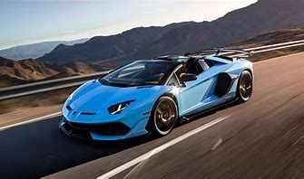
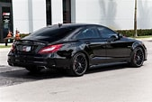

Bugatti Veyron — სუპერ სპორტული ავტომანქანა. წარმოადგენს ყველაზე სწრაფ საგზაო ავტომობილს, რომლის სიჩქარე უტოლდება 431.07 კმ/სთ.[1] მანქანის თავდაპირველ ვერსიას აქვს 407.12 კმ/სთ მაქსიმალური სიჩქარე. (ახლა აღარ)
.jpeg)
Jesko Absolut იკვებება 1280 bhp (1600 bhp E85), ტყუპი ტურბო დამუხტული V8 ძრავა, რომელშიც წარმოდგენილია მსოფლიოში ყველაზე მსუბუქი V8 crankshaft, რომელიც იწონის მხოლოდ 12.5 კგ. ეს ბრტყელი თვითმფრინავი 180 გრადუსიანი crankshaft აწარმოებს მეტ ენერგიას უფრო მეტი ეფექტურობით, ხოლო მაღალი 8500 rpm rev ლიმიტის მიღწევისას. მისი დიზაინი საშუალებას იძლევა ძრავის ბანკებშიც კი გაისროლოს, შექმნას ვისცერული ძრავის ხმა. Koenigsegg– მა ასევე შეიმუშავა სუპერ მსუბუქი დამაკავშირებელი წნელები და დგუშები, რათა შეეწინააღმდეგოს უფრო დიდი ვიბრაციების ტენდენციას ბრტყელ ავიაბილეთში.

LaFerrari, პროექტის სახელი F150,[4] არის შეზღუდული წარმოების საშუალო ძრავის, რბილი ჰიბრიდული სპორტული მანქანა, რომელიც აშენდა იტალიური საავტომობილო მწარმოებლის Ferrari-ს მიერ. [5] ლაფერარი ნიშნავს "ფერარი" იტალიურად; ეს მიზნად ისახავს იყოს საბოლოო Ferrari.
.jpeg)
Lamborghini შექმნა Aventador SVJ, რათა მიიღოს გამოწვევები სათავეში, აერთიანებს უახლესი ტექნოლოგია საგანგებო დიზაინი, ხოლო ყოველთვის უარს ამბობს კომპრომისზე. ტექნოლოგიით გამოწურულ მომავალში ადვილია მართვის ნამდვილი მღელვარების დაკარგვა. მაგრამ მომავალში ლამბორგინის მიერ ჩამოყალიბებული, ეს არ დარჩება უკან, რადგან საჭესთან ყოველთვის იქნება მძღოლი.
Nissan Skyline R34 არის Skyline სერიის მეცხრე თაობა, რომელიც დაინერგა 1998 წელს. იგი ხელმისაწვდომი იყო სედანისა და კუპეს სხეულის სტილში, ყველა წამყვანი ან უკანა წამყვანი ვარიანტებით. R34 GT-R მოდელში წარმოდგენილი იყო ტექნოლოგიურად მოწინავე ჩვენების განყოფილება და იკვებება ტყუპი ტურბო ინლაინ-ექვსი ძრავით (RB26DETT)12
.jpeg)
როდესაც მერსედესის მოდელს დაამატებთ ასოებს "AMG", დარწმუნებული ხართ, რომ მიიღებთ თვალწარმტაცი შესრულებას, ხოლო CLS63 AMG არ არის გამონაკლისი. როგორც მერსედესის "ოთხკარიანი კუპეს" მაღალი ცხენის ძალის ვერსია, ის გთავაზობთ თანამედროვე ხაზებს ოთახით ოთხისთვის. ქვეშ hood არის 5.5 ლიტრიანი ტყუპი ტურბო V-8, რომელიც ქმნის მხეცურად 577 ცხ.ძ. და 590 lb-ft შვიდი სიჩქარიანი ავტომატური. ყველა წამყვანი (4Matic) სტანდარტულია, ისევე როგორც ადაპტური სპორტული შეჩერება.
